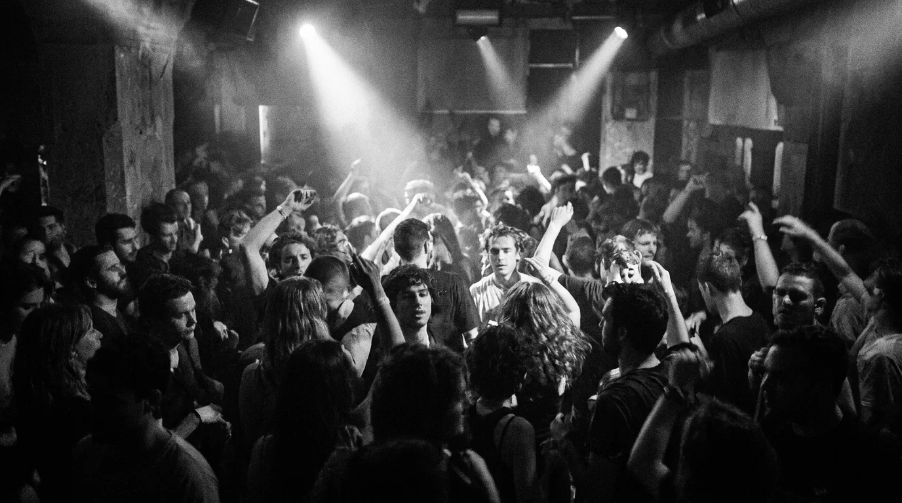
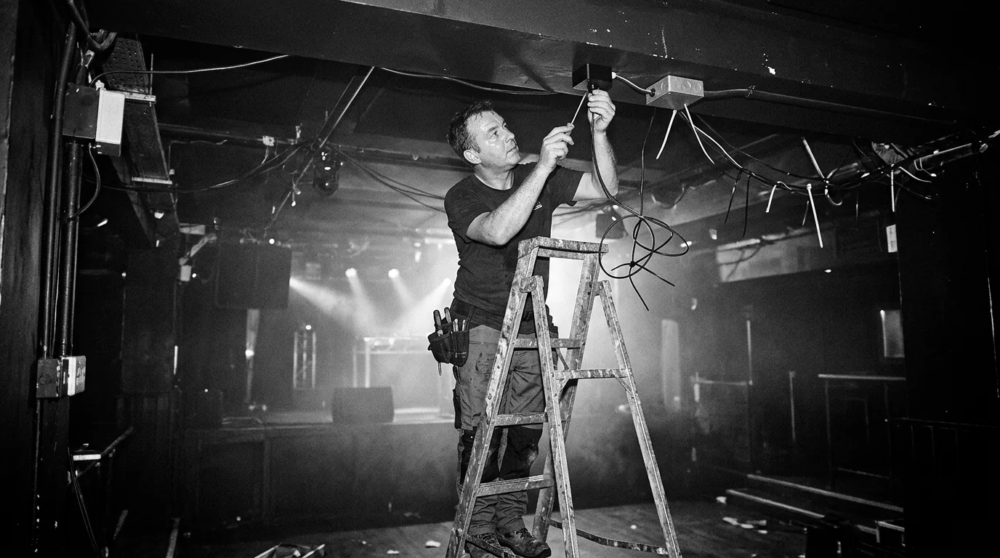
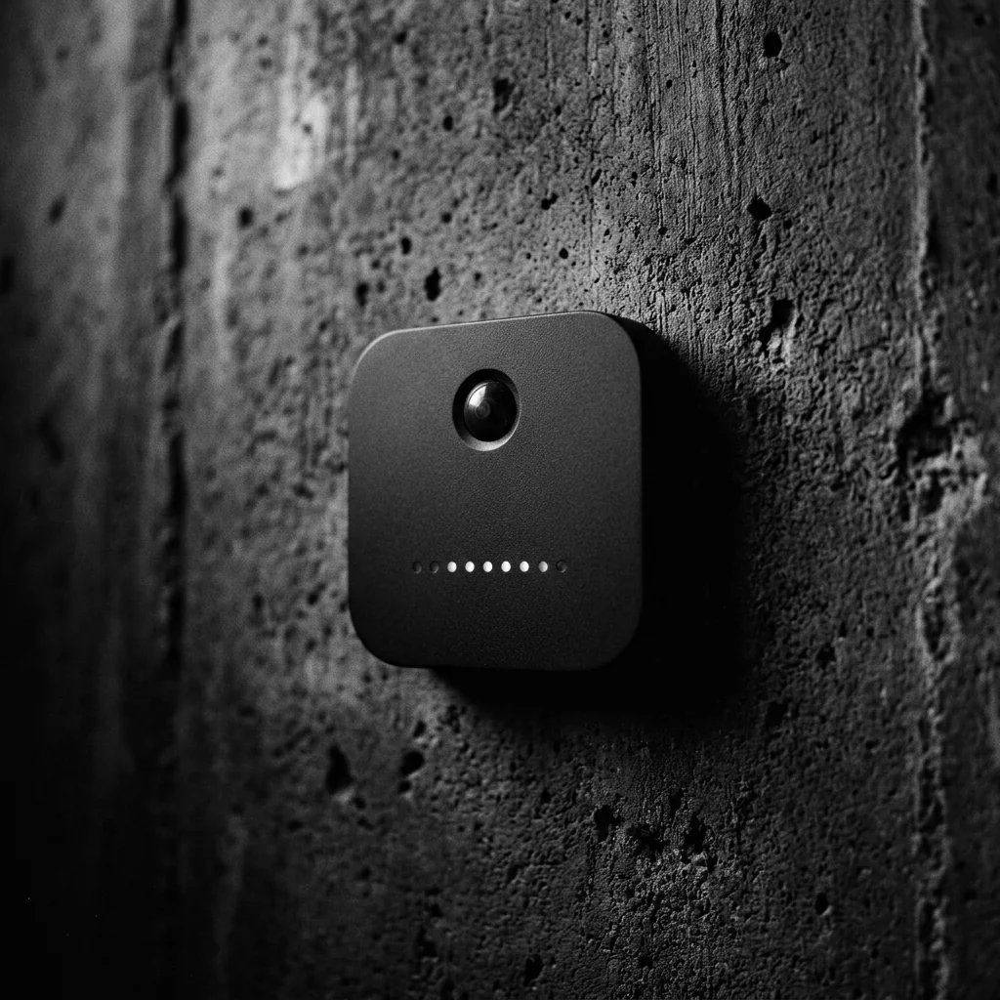
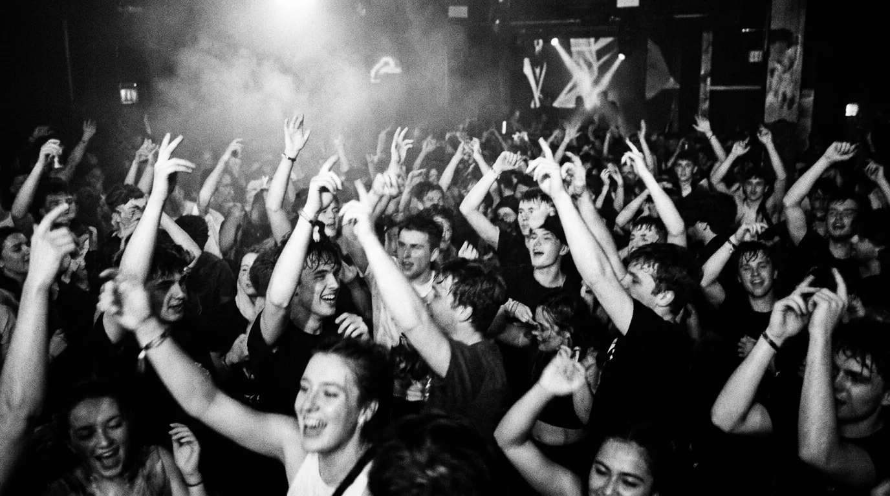

Live-Sound
Lautstärke im Blick behalten. Pegel sehen und erkennen, wann es im Raum zu laut wird.
Du machst die Nacht. Wir machen sie sichtbar. Lautstärke, Auslastung und Umgebung — in Echtzeit, an einem Ort.
Pilot anfragen
LIVE-EINBLICK · DEMO
94 dB 412 GästeFür Clubs mit Charakter · fiktive Venue-Beispiele
Einlass im Blick
312hEngpässe erkennen
Bar 2: StauSound verstehen
96 dBIllustrative Dashboard-Werte. Keine aktuellen Messungen.
Die richtigen Informationen, wenn es darauf ankommt. Damit dein Team bei den Gästen bleiben kann.
Lautstärke im Blick behalten. Pegel sehen und erkennen, wann es im Raum zu laut wird.
Verstehen, wie sich dein Laden füllt. Einlass und Auslastung zusammen betrachten.
Umsatz und Besuch zusammen denken. Die Anbindung deiner Kassendaten klären wir im Pilot.
Auffällige Werte früh erkennen. Grenzwerte und Hinweise passend zu deinem Betrieb abstimmen.
Nächte vergleichen statt raten. Muster in Lautstärke, Auslastung und Umgebung entdecken.
Sensorik, Daten und Dashboard zusammenbringen. Gemeinsam mit deinem Team, Schritt für Schritt.
Von der ersten Türöffnung bis zum letzten Track. Aus Messwerten wird ein Bild deines Betriebs.
Gäste
1.284Umsatz
28.420 €Auslastung
82 %Illustrative Darstellung mit Beispieldaten. Umsatzdaten setzen eine gesonderte Integration voraus.

01 / SENSORIKGemeinsam finden wir die richtigen Messpunkte für deinen Raum und richten die Sensorik ein.
Die Sensoren liefern ihre Messwerte an die Datenpipeline. Aus einzelnen Signalen wird ein Zusammenhang.
Im Dashboard laufen die Informationen zusammen. Für Entscheidungen mitten in der Nacht und danach.

Lautstärke, Auslastung und Umgebung — Sensorik, die den Betrieb sichtbar macht, nicht die Menschen dahinter.
Pegel und Umgebung messen, Auffälligkeiten erkennen.
Bewegungen im Raum verstehen — nicht einzelne Gäste identifizieren.
Sehen, wo sich die Nacht verdichtet.
Messumfang, Verarbeitung und Aufbewahrung gemeinsam im Pilot klären.
Clubins verbindet Sensorik mit Echtzeit-Daten für Bars und Clubs. Wir wollen den Menschen hinter der Nacht helfen, ihren Betrieb besser zu verstehen — ohne das Gefühl für ihren Laden zu verlieren.
„Endlich sehen wir, was wir sonst nur im Gefühl hatten.“
„Ein Blick aufs Dashboard. Und wir wissen, wo wir gebraucht werden.“
„Mehr Überblick für unser Team. Mehr Raum für eine gute Nacht.“

Lass uns herausfinden, was Clubins für deinen Laden tun kann. Umfang, Installation und Konditionen stimmen wir im persönlichen Gespräch ab. Keine pauschalen Preisversprechen.